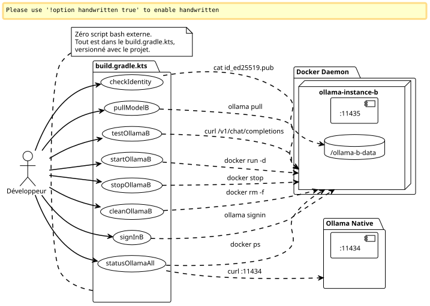
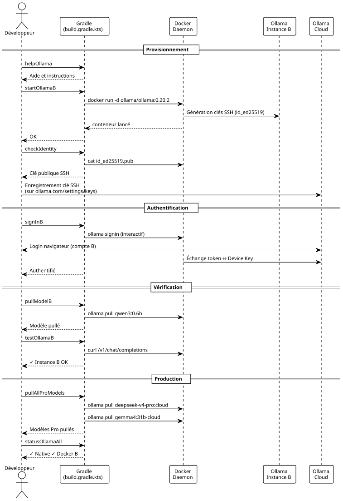

Plugin Gradle Maison pour Piloter Deux Instances Ollama Pro en Parallèle
Publié le 08 May 2026
Pourquoi taper des commandes docker à la main quand on peut tout encapsuler dans des tâches Gradle ? Voici comment j’ai industrialisé ma config dual-Ollama Pro avec zéro script shell externe. Démarrage, arrêt, identité, sign-in, pull — tout passe par ./gradlew.
1. Introduction
Dans l’article précédent, j’ai montré comment faire cohabiter deux comptes Ollama Pro sur la même machine en isolant la deuxième instance dans un conteneur Docker. Le montage fonctionne, mais la gestion au quotidien est vite pénible : se souvenir du nom du conteneur, relancer les bonnes commandes docker exec, checker quel port est actif…
Vous connaissez ce moment où vous avez 14 terminaux ouverts, que vous tapez docker exec ollama-instance-b ollama list pour la quatrième fois, et que vous vous dites « il doit bien y avoir un moyen plus propre » ?
Ce moyen, c’est Gradle.
Pas juste pour builder du code. Gradle comme un chef d’orchestre d’infrastructure locale. Des tâches qui provisionnent, vérifient, testent, et nettoient. Le tout versionné dans un build.gradle.kts qui vit à côté du docker-compose.yml.

2. Pourquoi Gradle Pour de l’Infra ?
La question est légitime. Gradle, c’est un build tool. Normalement, il compile, il teste, il package. Pas il lance des conteneurs Docker.
Sauf que Gradle est aussi un moteur de graphe de dépendances — et c’est là que ça devient intéressant pour notre cas.
On veut : . Que le conteneur soit lancé avant un sign-in . Que l’identité soit vérifiée avant un pull de modèle . Qu’un test API échoue silencieusement si le conteneur est down
Du graphe de dépendances pur. Gradle est taillé pour ça. Le DSL Kotlin rend l’écriture des tâches fluide, et le doLast permet d’exécuter des commandes système comme si c’était du code applicatif.
Et surtout : pas de bashrc à maintenir, pas de scripts qui traînent dans ~/bin, pas de Makefile à côté du docker-compose. Tout vit dans un seul fichier, au même endroit que le code du projet.
3. Le build.gradle.kts Complet
Voici le fichier que j’ai fini par écrire. Il fait tout, du provisionnement du volume jusqu’au curl de vérification, en passant par le sign-in interactif.
import java.io.ByteArrayOutputStream
plugins {
base
}
// -------------------------------------------------------------------------
// Configuration
// -------------------------------------------------------------------------
val instanceName = "ollama-instance-b"
val instancePort = 11435
val instanceImage = "ollama/ollama:0.20.2"
val dataDir = file("${System.getProperty("user.home")}/ollama-b-data")
val nativePort = 11434
// Modèles à gérer — cloud Pro + un modèle local gratuit pour les tests
val proModels = listOf("deepseek-v4-pro:cloud", "gemma4:31b-cloud")
val freeModels = listOf("qwen3:0.6b")
// -------------------------------------------------------------------------
// Tâche préparatoire — création du volume si absent
// -------------------------------------------------------------------------
val prepareVolume by tasks.registering {
group = "ollama"
description = "Crée le répertoire de volume pour l'instance B si absent"
doLast {
if (!dataDir.exists()) {
dataDir.mkdirs()
println("Volume créé : ${dataDir.absolutePath}")
} else {
println("Volume existant : ${dataDir.absolutePath}")
}
}
}
// -------------------------------------------------------------------------
// Démarrage du conteneur Docker
// -------------------------------------------------------------------------
val startOllamaB by tasks.registering(Exec::class) {
group = "ollama"
description = "Lance le conteneur Docker pour l'instance Ollama B"
dependsOn(prepareVolume)
commandLine(
"docker", "run", "-d",
"--name", instanceName,
"-p", "$instancePort:11434",
"-v", "${dataDir.absolutePath}:/root/.ollama",
"-e", "OLLAMA_HOST=0.0.0.0",
"--restart", "always",
instanceImage
)
isIgnoreExitValue = true
doLast {
val alreadyRunning = executionResult.get().exitValue != 0
if (alreadyRunning) {
logger.lifecycle("Le conteneur '$instanceName' existe déjà — tentative de démarrage")
} else {
logger.lifecycle("Conteneur '$instanceName' lancé")
}
}
}
// -------------------------------------------------------------------------
// Arrêt du conteneur
// -------------------------------------------------------------------------
val stopOllamaB by tasks.registering(Exec::class) {
group = "ollama"
description = "Arrête le conteneur Docker de l'instance B"
commandLine("docker", "stop", instanceName)
isIgnoreExitValue = true
doLast {
logger.lifecycle("Conteneur '$instanceName' arrêté")
}
}
// -------------------------------------------------------------------------
// Affichage de la clé publique (Device Key)
// -------------------------------------------------------------------------
val checkIdentity by tasks.registering(Exec::class) {
group = "ollama"
description = "Affiche la clé publique SSH de l'instance B"
dependsOn(startOllamaB)
commandLine("docker", "exec", instanceName, "cat", "/root/.ollama/id_ed25519.pub")
standardOutput = ByteArrayOutputStream()
doLast {
val pubKey = standardOutput.toString().trim()
println("=".repeat(60))
println("Device Key (Instance B)")
println("=".repeat(60))
println(pubKey)
println("=".repeat(60))
println("→ Enregistre cette clé sur https://ollama.com/settings/keys")
println("→ Puis exécute : ./gradlew signInB")
println("=".repeat(60))
}
}
// -------------------------------------------------------------------------
// Sign-in interactif (Ouvrira le navigateur)
// -------------------------------------------------------------------------
val signInB by tasks.registering(Exec::class) {
group = "ollama"
description = "Lance l'authentification interactive Ollama pour le compte B"
dependsOn(startOllamaB)
standardInput = System.`in`
standardOutput = System.out
errorOutput = System.err
commandLine("docker", "exec", "-it", instanceName, "ollama", "signin")
doFirst {
logger.lifecycle("Authentification pour le Compte Pro B...")
logger.lifecycle("Ouvre ton navigateur et connecte-toi avec l'email du compte B")
}
}
// -------------------------------------------------------------------------
// Pull d'un modèle (paramétrable via propriété Gradle)
// -------------------------------------------------------------------------
val pullModelB by tasks.registering(Exec::class) {
group = "ollama"
description = "Pull un modèle sur l'instance B. Usage : ./gradlew pullModelB -Pmodel=nom:tag"
dependsOn(startOllamaB)
val modelName = project.findProperty("model") as? String ?: "qwen3:0.6b"
commandLine("docker", "exec", instanceName, "ollama", "pull", modelName)
doFirst {
logger.lifecycle("Pull du modèle '$modelName' sur l'instance B...")
}
doLast {
logger.lifecycle("Modèle '$modelName' pullé avec succès")
}
}
// -------------------------------------------------------------------------
// Pull de tous les modèles Pro (batch)
// -------------------------------------------------------------------------
val pullAllProModels by tasks.registering {
group = "ollama"
description = "Pull tous les modèles cloud Pro sur l'instance B"
dependsOn(startOllamaB)
doLast {
proModels.forEach { model ->
logger.lifecycle("→ Pull $model...")
val process = ProcessBuilder("docker", "exec", instanceName, "ollama", "pull", model)
.inheritIO()
.start()
process.waitFor()
}
logger.lifecycle("Tous les modèles Pro pullés")
}
}
// -------------------------------------------------------------------------
// Pull de tous les modèles gratuits (batch / première install)
// -------------------------------------------------------------------------
val pullAllFreeModels by tasks.registering {
group = "ollama"
description = "Pull tous les modèles locaux gratuits sur l'instance B"
dependsOn(startOllamaB)
doLast {
freeModels.forEach { model ->
logger.lifecycle("→ Pull $model...")
val process = ProcessBuilder("docker", "exec", instanceName, "ollama", "pull", model)
.inheritIO()
.start()
process.waitFor()
}
logger.lifecycle("Tous les modèles gratuits pullés")
}
}
// -------------------------------------------------------------------------
// Liste des modèles disponibles sur l'instance B
// -------------------------------------------------------------------------
val listModelsB by tasks.registering(Exec::class) {
group = "ollama"
description = "Liste les modèles disponibles sur l'instance B"
dependsOn(startOllamaB)
commandLine("docker", "exec", instanceName, "ollama", "list")
}
// -------------------------------------------------------------------------
// Health check — test API sur les deux instances
// -------------------------------------------------------------------------
val testOllamaB by tasks.registering {
group = "ollama"
description = "Teste la connectivité API de l'instance B avec un simple chat"
dependsOn(startOllamaB)
doLast {
val model = project.findProperty("model") as? String ?: "qwen3:0.6b"
logger.lifecycle("Test de l'instance B avec le modèle '$model'...")
val payload = """
{
"model": "$model",
"messages": [{"role": "user", "content": "Réponds uniquement par OK"}],
"max_tokens": 5
}
""".trimIndent()
val process = ProcessBuilder(
"curl", "-s", "http://localhost:$instancePort/v1/chat/completions",
"-H", "Content-Type: application/json",
"-d", payload
).start()
val response = process.inputStream.bufferedReader().readText()
process.waitFor()
if (response.contains("\"id\":\"chatcmpl") || response.contains("\"choices\"")) {
println("✓ Instance B OK — port $instancePort répond")
println(" Response: ${response.take(120)}...")
} else {
println("✗ Instance B INACTIVE — vérifie le conteneur avec './gradlew statusOllamaAll'")
println(" Raw: $response")
}
}
}
// -------------------------------------------------------------------------
// Health check sur les deux instances simultanément
// -------------------------------------------------------------------------
val statusOllamaAll by tasks.registering {
group = "ollama"
description = "Vérifie le statut des deux instances Ollama (native + Docker)"
doLast {
// Instance native
runCatching {
val process = ProcessBuilder(
"curl", "-s", "-o", "/dev/null", "-w", "%{http_code}",
"http://localhost:$nativePort/api/tags"
).start()
val code = process.inputStream.bufferedReader().readText().trim()
process.waitFor()
println(if (code == "200") "✓ Instance Native — port $nativePort OK (HTTP $code)"
else "✗ Instance Native — port $nativePort (HTTP $code)")
}.getOrElse {
println("✗ Instance Native — injoignable sur le port $nativePort")
}
// Instance Docker
runCatching {
val process = ProcessBuilder(
"curl", "-s", "-o", "/dev/null", "-w", "%{http_code}",
"http://localhost:$instancePort/api/tags"
).start()
val code = process.inputStream.bufferedReader().readText().trim()
process.waitFor()
println(if (code == "200") "✓ Instance Docker B — port $instancePort OK (HTTP $code)"
else "✗ Instance Docker B — port $instancePort (HTTP $code)")
}.getOrElse {
println("✗ Instance Docker B — injoignable sur le port $instancePort")
}
// Info conteneur
runCatching {
val process = ProcessBuilder("docker", "ps", "--filter", "name=$instanceName",
"--format", "table {{.Names}}\\t{{.Status}}\\t{{.Ports}}").start()
val status = process.inputStream.bufferedReader().readText()
process.waitFor()
println()
println("Conteneur Docker :")
println(status)
}
}
}
// -------------------------------------------------------------------------
// Nettoyage complet
// -------------------------------------------------------------------------
val cleanOllamaB by tasks.registering(Exec::class) {
group = "ollama"
description = "Arrête et supprime le conteneur Docker de l'instance B"
dependsOn(stopOllamaB)
commandLine("docker", "rm", instanceName)
isIgnoreExitValue = true
doLast {
logger.lifecycle("Conteneur '$instanceName' supprimé")
logger.lifecycle("Le volume ${dataDir.absolutePath} est conservé (identité persistante)")
}
}
// -------------------------------------------------------------------------
// Affichage des instructions
// -------------------------------------------------------------------------
val helpOllama by tasks.registering {
group = "ollama"
description = "Affiche l'aide des tâches Ollama disponibles"
doLast {
println("""
╔══════════════════════════════════════════════════════════════╗
║ Tâches Gradle — Pilotage Dual Ollama Pro ║
╠══════════════════════════════════════════════════════════════╣
║ ./gradlew startOllamaB Démarrer l'instance Docker B ║
║ ./gradlew stopOllamaB Arrêter l'instance Docker B ║
║ ./gradlew checkIdentity Afficher la clé SSH publique ║
║ ./gradlew signInB Sign-in interactif compte B ║
║ ./gradlew pullModelB Pull un modèle (-Pmodel=...) ║
║ ./gradlew pullAllProModels Pull tous les modèles Pro ║
║ ./gradlew pullAllFreeModels Pull tous les modèles gratuits ║
║ ./gradlew listModelsB Lister les modèles instance B ║
║ ./gradlew testOllamaB Test API avec un chat simple ║
║ ./gradlew statusOllamaAll Santé des 2 instances ║
║ ./gradlew cleanOllamaB Supprimer le conteneur ║
║ ./gradlew helpOllama Cette aide ║
╚══════════════════════════════════════════════════════════════╝
""".trimIndent())
}
}Voilà. Douze tâches, un point d’entrée unique, et zéro friction.
4. Anatomie des Tâches Clés
4.1. startOllamaB — Le Lanceur
Rien de sorcier : un docker run -d avec les bons paramètres. L’astuce est dans isIgnoreExitValue = true.
isIgnoreExitValue = trueSi le conteneur existe déjà, la commande docker run échoue (exit code ≠ 0). Sans cette propriété, Gradle arrêterait tout le build en erreur. Ici, l’échec est silencieux — et le doLast détecte si c’était un "déjà existant" ou une vraie erreur.
Le doLast est crucial : il tourne après l’exécution de la commande, ce qui permet d’inspecter executionResult.get().exitValue et de logger un message approprié.
4.2. signInB — L’Interactif
C’est la seule tâche qui nécessite une interaction humaine. Gradle transmet System.in au process pour que le prompt ollama signin puisse s’afficher normalement :
standardInput = System.`in`
standardOutput = System.out
errorOutput = System.errSans ça, le sign-in bloquerait car stdin serait fermé et vous ne verriez jamais le prompt.
4.3. pullModelB — Le Paramétrable
Une tâche générique qui accepte un paramètre via -P :
./gradlew pullModelB -Pmodel=deepseek-v4-pro:cloud
./gradlew pullModelB # fallback : qwen3:0.6bLe fallback est important : project.findProperty("model") as? String ?: "qwen3:0.6b" garantit que la tâche ne pète pas si on oublie le paramètre.
4.4. statusOllamaAll — Le Diagnostic
Deux curl en santé sur les ports 11434 et 11435, avec un fallback en runCatching pour ne pas crasher si l’une des instances est down. La sortie est structurée :
✓ Instance Native — port 11434 OK (HTTP 200)
✓ Instance Docker B — port 11435 OK (HTTP 200)
Conteneur Docker :
NAMES STATUS PORTS
ollama-instance-b Up 3 hours 0.0.0.0:11435->11434/tcpUn coup d’œil, et tu sais exactement ce qui tourne et ce qui cloche.
4.5. cleanOllamaB — Le Nettoyage qui Préserve l’Identité
commandLine("docker", "rm", instanceName)
isIgnoreExitValue = trueLe conteneur est supprimé, mais le volume ~/ollama-b-data est conservé. L’identité SSH survit au nettoyage. Au prochain startOllamaB, les mêmes clés seront réutilisées — pas besoin de refaire le sign-in ni de ré-enregistrer la Device Key.
|
|
5. Workflow Complet — De Zéro à Deux Sessions
Voici la séquence idéale pour quelqu’un qui arrive sur le projet et veut tout mettre en place sans ouvrir de documentation :
# 1. Premier contact — que faire ?
$ ./gradlew helpOllama
# 2. On démarre l'instance B
$ ./gradlew startOllamaB
# 3. On récupère la Device Key et on l'enregistre sur ollama.com
$ ./gradlew checkIdentity
# → copier-coller de la clé sur https://ollama.com/settings/keys
# 4. Authentification interactive
$ ./gradlew signInB
# 5. Pull d'un petit modèle gratuit pour tester la plomberie
$ ./gradlew pullModelB
# 6. Test API
$ ./gradlew testOllamaB
# 7. Si tout est vert, pull des modèles Pro
$ ./gradlew pullAllProModels
# 8. Vérification finale des deux instances
$ ./gradlew statusOllamaAllMoins de deux minutes, tout est provisionné. Pas de README à lire, pas de variables d’environnement à setter. La tâche helpOllama fait office de documentation intégrée.

6. Pourquoi Ne Pas en Faire un Vrai Plugin Gradle ?
Question légitime. Extraire ce build.gradle.kts en un plugin Gradle autonome aurait des avantages : réutilisation entre projets, configuration déclarative, extension DSL.
Mais pour l’instant, ça n’a pas de sens. Ce build n’a pas de logique métier complexe — c’est un wrapper autour de commandes Docker et curl. La surcouche d’un plugin Gradle complet (avec extension, tests unitaires, publication) serait disproportionnée pour 12 tâches utilitaires.
Le build.gradle.kts inline vit dans le projet qui en a besoin. Il est trivial à copier ailleurs. Si un jour j’ai trois projets qui en dépendent, je le transformerai en plugin. Pour l’instant, KISS.
|
Le jour où tu as trois |
7. Leçons Apprises
-
Gradle n’est pas qu’un build tool — Le moteur de graphe de dépendances en fait un orchestrateur d’infrastructure redoutable.
doLast,isIgnoreExitValue,dependsOn: ces trois primitives suffisent à piloter un conteneur Docker avec la même fiabilité qu’un pipeline CI. -
isIgnoreExitValueest ton ami — Dans un monde idéal,docker runsur un conteneur déjà existant renverrait un warning plutôt qu’un exit code d’erreur. Dans le monde réel, tu metsisIgnoreExitValue = trueet tu gères le diagnostic dansdoLast. -
Les tâches paramétrables tuent l’ambiguïté — Un
pullModelBgénérique avec-Pmodel=…remplace N tâches spécialisées. Une seule tâche, une seule doc, un seul comportement. -
runCatchingpour les health checks — Quand tu testes N endpoints, le crash du premier ne doit pas empêcher de tester les autres.runCatching+getOrElsepar endpoint, et le diagnostic reste complet même en cas de panne partielle. -
La tâche
helpOllamacomme documentation exécutable — Unprintln()bien formaté remplace un README de trois paragraphes. C’est auto-documenté, toujours à jour, et accessible sans sortir du terminal.
8. Conclusion
On est passé de commandes docker à taper à la main à un workflow Gradle complet, versionné, réutilisable. Douze tâches couvrent tout le cycle de vie : provisionnement, identité, sign-in, pull, test, diagnostic, nettoyage.
Le combo docker-compose + build.gradle.kts + opencode.json forme une trinité propre : Docker pour l’isolation, Gradle pour l’orchestration, OpenCode pour la consommation. Chaque couche a sa responsabilité, et aucune ne déborde sur l’autre.
Prochaine étape ? Automatiser le cycle de vie dans la CI pour que les instances Ollama soient disponibles dans les environnements de dev éphémères. Mais ça, c’est un autre article.
9. Ressources
Article publié le 2026-05-08